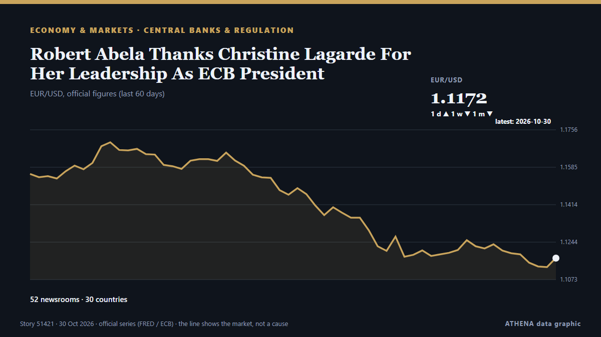

Robert Abela Thanks Christine Lagarde For Her Leadership As ECB President

The deposit rate will be left at 2.5% on Thursday, analysts say. von Luxembourg Times
Unabhängig gemeldet von 52 Medien in 30 Ländern seit dem 29. Okt., zuerst von Luxembourg Times; die Berichterstattung flaut ab. ATHENA stuft das Risiko als mäßig ein (2.4/10), vor allem wegen der Schwere des beschriebenen Schadens und seiner geografischen und sektoralen Reichweite. Die Konfidenz liegt bei 86 % (hoch): 52 Medien bestätigen es unabhängig, bei einer mittleren Verlässlichkeit der Quellen von 75 %.
Warum es wichtig ist: Zentralbanken bestimmen den Preis des Geldes; ihre Zinsentscheidungen bewegen Währungen, Anleihen, Hypotheken und Börsen weltweit.
Was sich geändert hat: 16 neue Berichte von 13 Redaktionen in den 24 Stunden bis 30. Okt..
Erste Schlagzeile: European Central Bank (ECB) head Christine Lagarde to step down in February, before her term ends
Schlagzeilen werden auf Englisch angezeigt, wie veröffentlicht.
Auf einen Blick
Ausgewählt, bewertet und geschrieben nach der veröffentlichten Methodik von ATHENA. Kein Redakteur greift in einzelne Ereignisse ein. So entsteht ATHENA ›
| 29 Oct 05:40 UTC | 1 |
|---|---|
| 29 Oct 07:40 UTC | 1 |
| 29 Oct 09:40 UTC | 35 |
| 29 Oct 11:40 UTC | 9 |
| 29 Oct 13:40 UTC | 10 |
| 29 Oct 15:40 UTC | 6 |
| 29 Oct 17:40 UTC | 2 |
| 29 Oct 19:40 UTC | 2 |
| 29 Oct 21:40 UTC | 2 |
| 29 Oct 23:40 UTC | 0 |
| 30 Oct 01:40 UTC | 0 |
| 30 Oct 03:40 UTC | 2 |
| 30 Oct 05:40 UTC | 1 |
| 30 Oct 07:40 UTC | 0 |
| 30 Oct 09:40 UTC | 0 |
| 30 Oct 11:40 UTC | 0 |
| 30 Oct 13:40 UTC | 2 |
| 30 Oct 15:40 UTC | 1 |
| 29 Oct 08:36 UTC | 1.3 |
|---|---|
| 29 Oct 11:06 UTC | 2.2 |
| 30 Oct 16:01 UTC | 2.4 |
Warum diese Zahlen
Bedeutung
Risiko
Konfidenz
Die Berichterstattung – wer berichtete, und wann
Schlagzeile wie veröffentlicht · öffnet das Original- Luxembourg Times · Luxemburg · LuxembourgECB set to hold rates to assess France and energy risks
- Business Recorder · PakistanEuropean shares inch up ahead of ECB as earnings remain in focus
- to vima · Griechenland · GreeceLagarde to Exit ECB as Europe Faces Economic Headwinds
- European Central Bank press · Deutschland · GermanyECB President Lagarde to step down on 7 February 2027
- CNBC Economy · Vereinigte Staaten · United StatesThe politics of President Lagarde's European Central Bank early exit — and who could replace her
- New York Times Business · Vereinigte Staaten · United StatesChristine Lagarde to Step Down as President of European Central Bank
- The Straits Times · Singapur · SingaporeEuropean Central Bank president Christine Lagarde resigns after months of speculation
- Politico Europe · Belgien · BelgiumLagarde’s early exit Le Pen-proofs ECB as France veers toward a debt reckoning
- France 24 English · Frankreich · France🔴 ECB President Christine Lagarde to step down in February 2027, months before term ends
- Vanguard · NigeriaECB President Christine Lagarde to step down in February 2027
- Luxembourg Times · Luxemburg · LuxembourgChristine Lagarde to step down as ECB president in February
- CNA (Channel NewsAsia) · Singapur · SingaporeECB President Lagarde resigns after months of speculation
- The Independent · Vereinigtes Königreich · United KingdomEuropean Central Bank President Christine Lagarde will resign Feb. 7, ahead of term
- DW English · Deutschland · GermanyEuropean Central Bank (ECB) head Christine Lagarde to step down in February, before her term ends
- RTÉ News · Irland · IrelandLagarde announces resignation after months of speculation
- Xinhua (English) — page reader · ChinaUrgent: Lagarde to step down as ECB president in February
- The Straits Times · Singapur · SingaporeECB President Lagarde resigns at time of mounting challenges for Europe
- Euractiv · Belgien · BelgiumLagarde to step down as ECB president
- Stuff · Neuseeland · New ZealandEuropean Central Bank President Christine Lagarde to resign nine months early
- The Korea Times · Südkorea · South KoreaEuropean Central Bank President Christine Lagarde will resign Feb. 7, ahead of term
- Guardian Business · Vereinigtes Königreich · United KingdomEurope’s central bank chief, Christine Lagarde, steps down for ‘freedom of speech’
- Cyprus Mail · Zypern · CyprusLagarde quits ECB nine months early as eurozone faces fresh interest rate pressure
- CNA (Channel NewsAsia) · Singapur · SingaporeEuropean Central Bank President Christine Lagarde to step down months before term ends
- ProtoThema English ·Lagarde to step down as ECB president in February – Pierrakakis thanks her for contribution to eurozone stability
- Business Recorder · PakistanECB President Lagarde resigns at time of mounting challenges for Europe
- The Straits Times · Singapur · SingaporeChristine Lagarde: The outsider who led the ECB her way
- Rappler · Philippinen · PhilippinesECB President Lagarde resigns at time of mounting challenges for Europe
- TheJournal.ie · Irland · IrelandChristine Lagarde to step down as president of European Central Bank
- Free Malaysia Today · MalaysiaECB president Lagarde resigns at time of mounting challenges for Europe
- Central Banking · Vereinigtes Königreich · United KingdomLagarde to step down from ECB
- APA (English) · Aserbaidschan · AzerbaijanChristine Lagarde to step down as ECB president in February
- The Economist - Finance & economics · Vereinigtes Königreich · United KingdomChristine Lagarde departs at a moment of peril
- Sky News (World) · Vereinigtes Königreich · United KingdomWill she stand? Lagarde quits European Central Bank ahead of French election
- The National · Vereinigte Arabische Emirate · United Arab EmiratesECB President Christine Lagarde resigns after months of speculation
- ProtoThema English ·ECB faces leadership shake-up as Lagarde’s departure triggers succession race
- Punch · NigeriaChristine Lagarde to step down as European central bank president
- Global News (World) · Kanada · CanadaEuropean Central Bank chief resigns as economic volatility worsens
- Baltic News Network · Lettland · LatviaChanges at the European Central Bank – Lagarde announces early resignation
- Türkiye Today · Türkei · TurkeyECB chief Lagarde to step down early, triggering leadership race
- Channels TV · NigeriaECB President Christine Lagarde To Step Down In February 2027